Direct light sampling with area light sources. Analytic solution, Monte Carlo integration, and stratified sampling built on top of the Embree skeleton raytracer.
The analytic solution computes direct lighting from a parallelogram area light in closed form using the irradiance vector formula, with a Lambertian BRDF. No shadow rays are needed, and the result is completely noise-free.
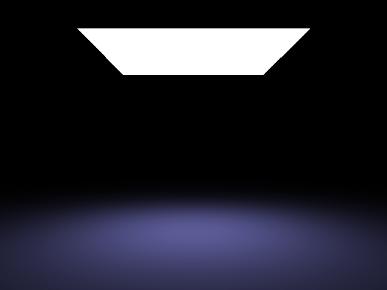
analytic.test: noise-free area light, Lambertian BRDFThe Monte Carlo estimator samples N random points on the light and averages their contributions. The overall intensity converges to the analytic result, but noise decreases as N increases.
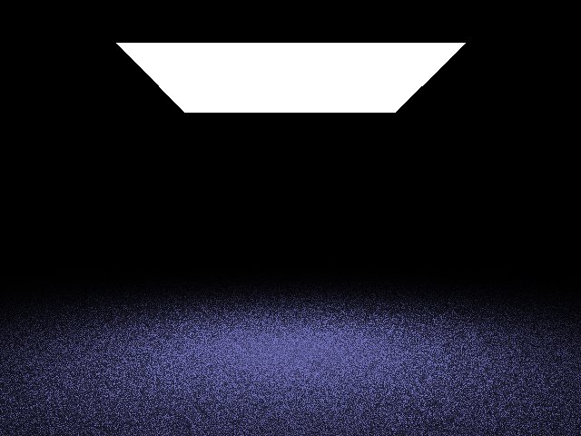
N = 1 sample: heavy noise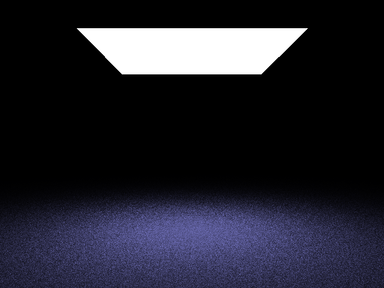
N = 3 samples: noise reduced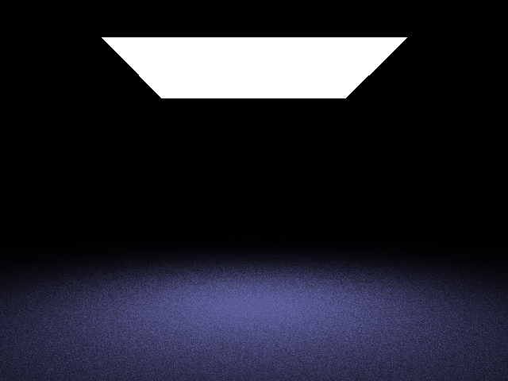
N = 9 samples: visibly cleanerInstead of sampling the light uniformly at random, stratified sampling dices the parallelogram into an MxM grid and draws one jittered sample per cell. With the same total sample count (9), stratification gives noticeably less noise than uniform random sampling.
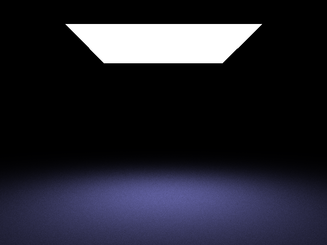
direct3x3.test: 3x3 stratified samplesTwo colored area light sources illuminate a diffuse gray sphere, producing overlapping penumbrae where the shadows partially cancel. Rendered with 5x5 stratified sampling.
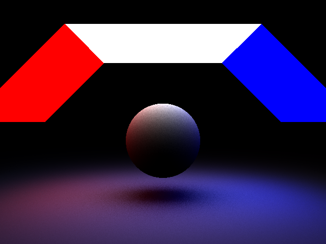
sphere.test: 5x5 stratified, two colored lightsClassic Cornell box illuminated by a quad area light, without mirror reflections. Soft shadows are produced by the area light. Rendered with 5x5 stratified sampling.
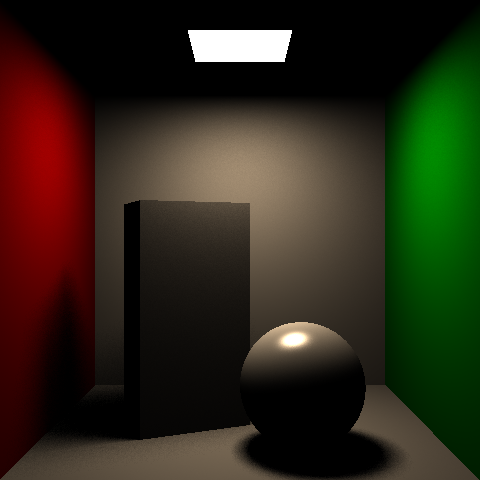
cornell.test: 5x5 stratified area lightThe Stanford dragon (~100k triangles) lit by an area light source. Rendered with 5x5 stratified sampling.
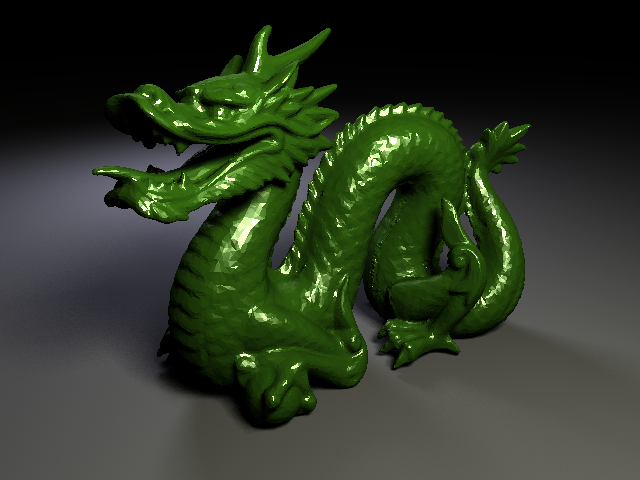
dragon.test: 5x5 stratifiedRendering at higher sample counts shows the estimator converging further toward the noise-free analytic result. The images below compare N = 9, 25, and 64 uniform samples on the same scene.
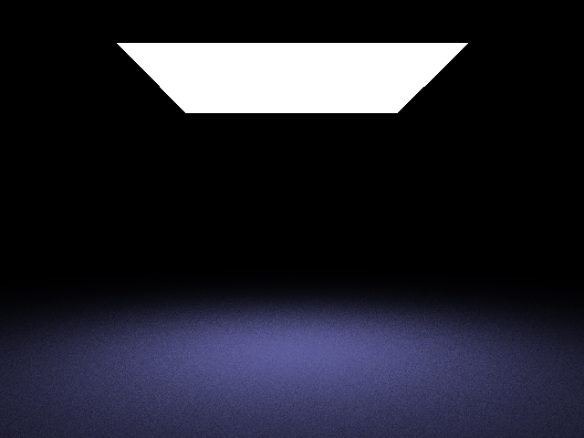
N = 25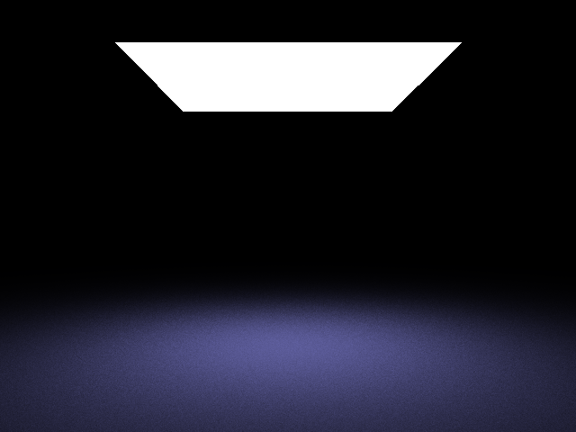
N = 64 approaching analytic qualityBoth images use exactly 25 samples (5x5). With uniform random sampling, samples can cluster leaving parts of the light undersampled, so noise remains visible. Stratified sampling guarantees one sample per cell of the 5×5 grid, spreading coverage evenly and producing a much cleaner result for the same cost.
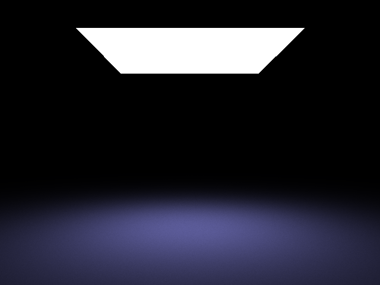
5x5 stratified: same sample count, far less noiseThe required assignment only supports parallelogram (quad) lights. Three additional area light types were implemented, each with distinct sampling math and shadow characteristics. All renders use the same Cornell box environment and 25 stratified samples.
Sphere light samples points uniformly over a sphere surface and rejects back-facing samples using the geometry term. Because the emitter radiates in all directions, it produces soft circular shadows and a visible glowing sphere in the scene.
Disk light uses concentric disk mapping to sample uniformly over a circular emitter. Compared to the quad light, the disk produces a rounder highlight on the ceiling and a softer penumbra that reflects the circular emitter shape.
Mesh light supports arbitrary triangle emitters. At load time, a CDF is built over triangle areas so that larger triangles are sampled proportionally more often. An L-shaped mesh light is used here, producing an irregular shadow shape that no other light type can replicate.
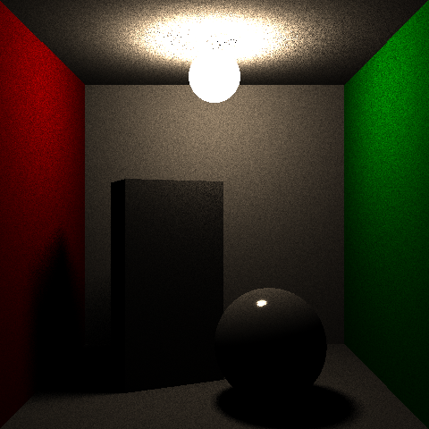
Sphere light: omnidirectional soft shadows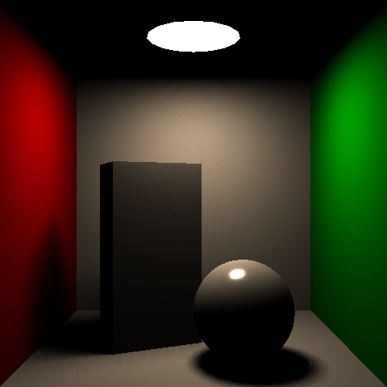
Disk light: circular emitter, rounder penumbra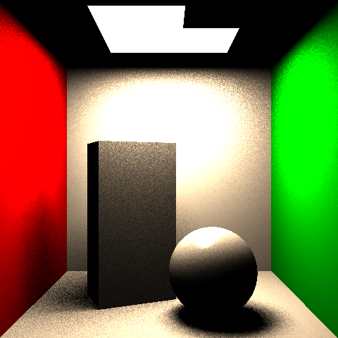
Mesh light: L-shaped emitter, irregular shadowsThe standard point light in a ray tracer is treated as an infinitesimal point, which creates hard-edged shadows that are not physically accurate since real light sources have size. In the physical integrator, point lights are modeled as small emissive spheres, with the radius controlled by the attenuation.z parameter in the scene file.
Sampling follows the same approach as sphere area lights. N points are sampled uniformly over the sphere surface, back-facing samples are rejected using the geometry term, and shadow rays are cast to each sample. This produces soft shadows where the width increases with the sphere radius. A larger radius creates softer shadows, while a very small radius approaches hard shadows.
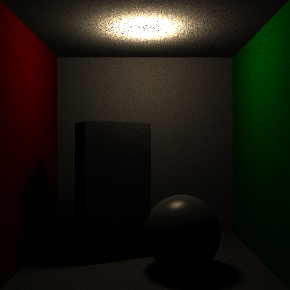
Point light with radius: soft shadows that grow with size